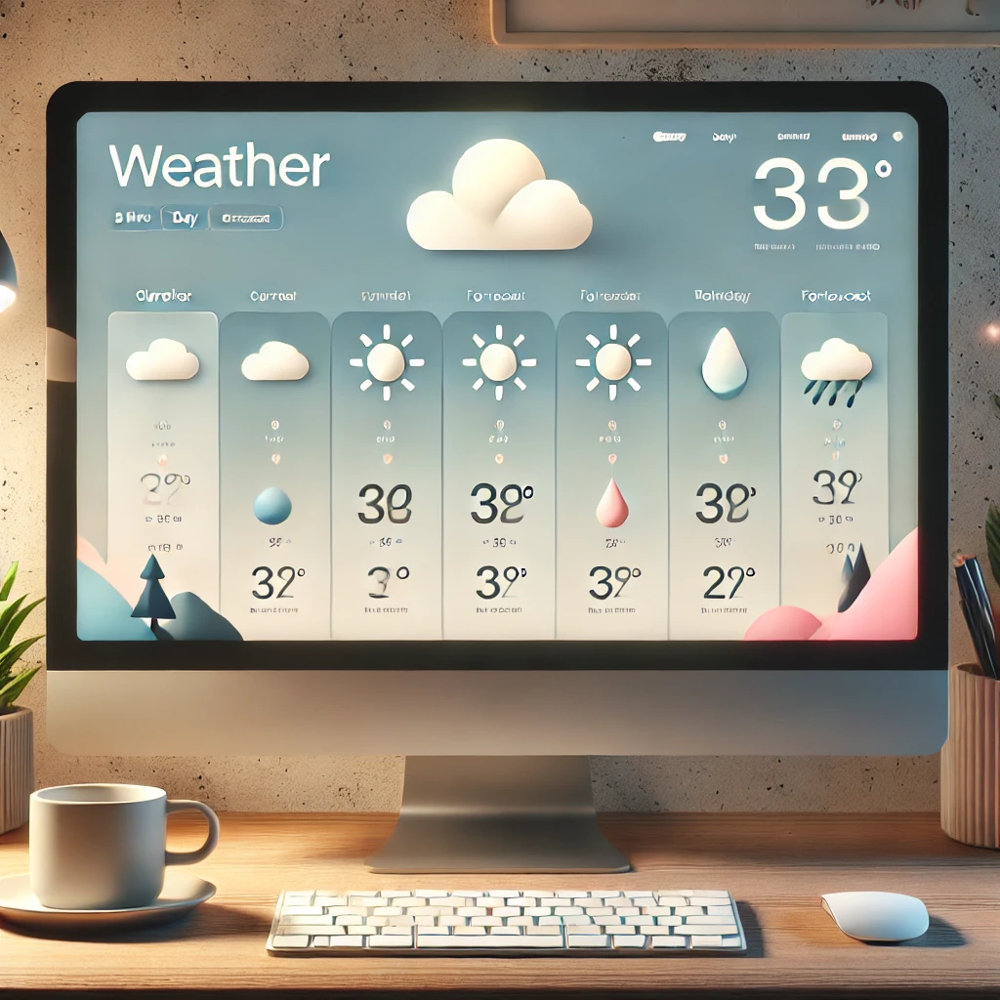
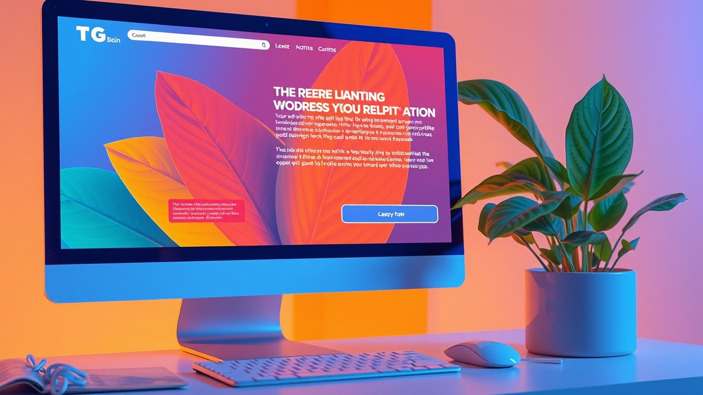
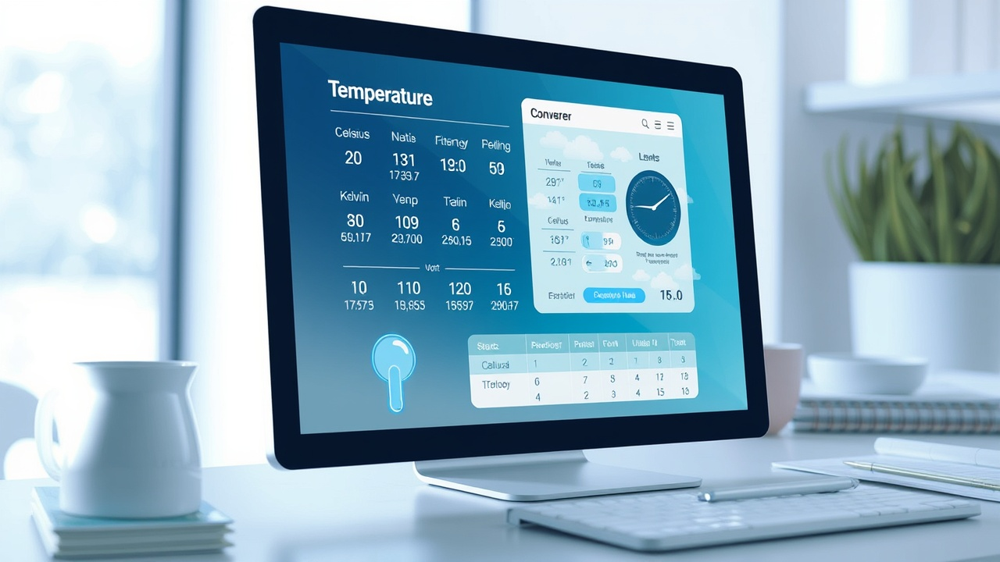

I am a passionate web developer with a strong foundation in frontend technologies such as HTML, CSS, and JavaScript. I love creating intuitive, responsive websites that offer seamless user experiences. My journey in web development began as a hobby, and over time, it evolved into a career I’m deeply passionate about.
In addition to my technical skills, I believe in continuous learning and always strive to stay updated with the latest trends and best practices in web development. I enjoy collaborating with others, and I believe that teamwork is crucial to bringing creative ideas to life. Whether working on personal projects or team-based tasks, I am always motivated to improve and grow as a developer.
Outside of coding, I have a strong interest in problem-solving, innovation, and exploring new technologies. When I'm not writing code, you can find me experimenting with new tools, attending workshops, and participating in developer communities.
A Python-based voice assistant that simplifies tasks.
This portfolio showcases my skills & projects.
A responsive climate website built using HTML, CSS, and JavaScript.
A landing page is prepared by designing an engaging layout with a clear headline, benefits, visuals, and a strong call-to-action to attract sign-ups.
A temperature converter landing page is prepared by creating a simple, user-friendly interface with input fields and conversion results.
Email: sudheeradepu1@gmail.com
GitHub: sudheer-01
LinkedIn: Sudheer Kumar Adepu
Resume: Download My Resume